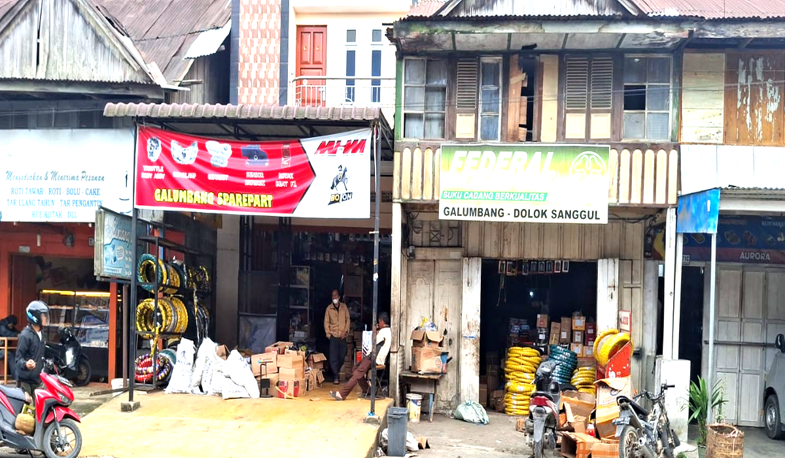
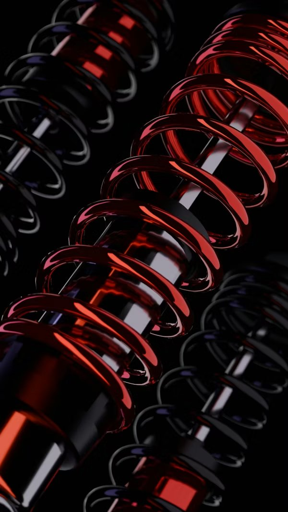
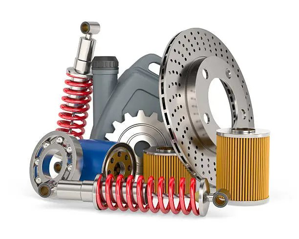
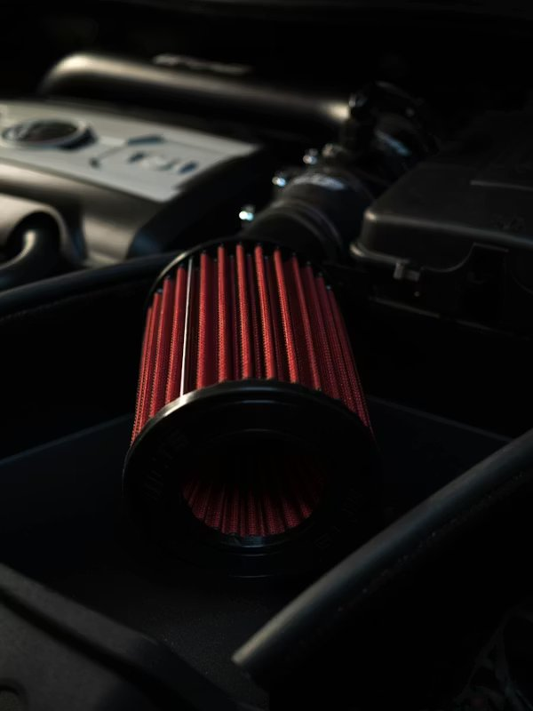
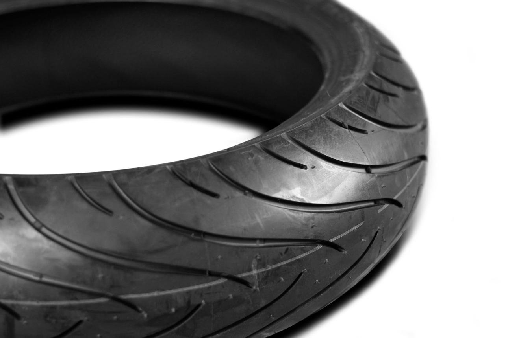
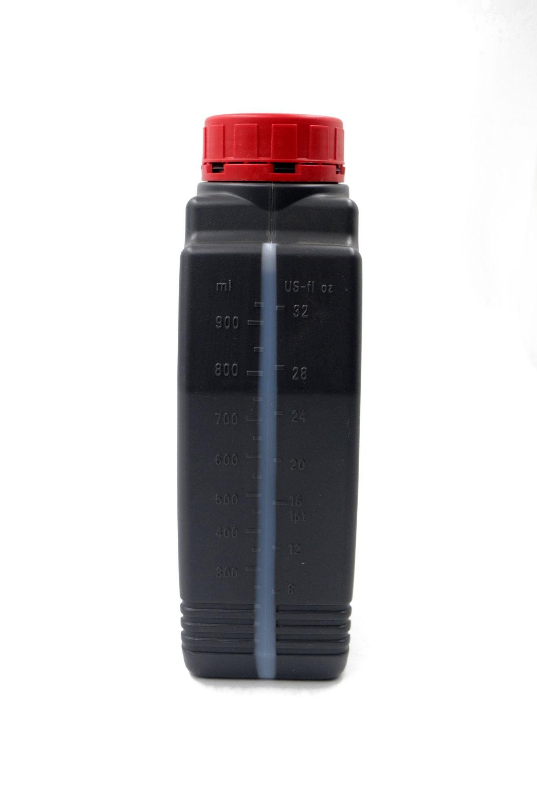
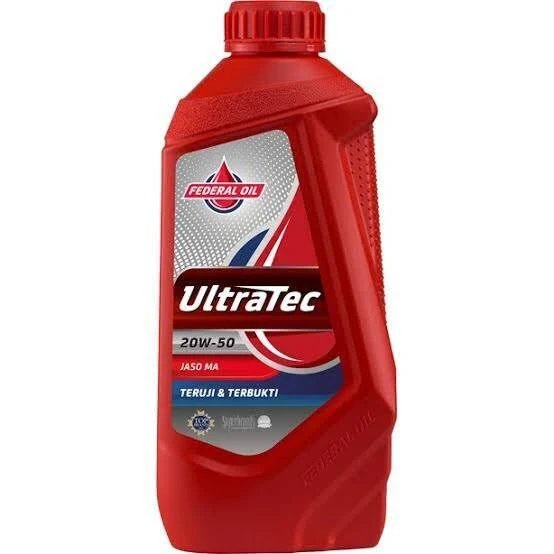
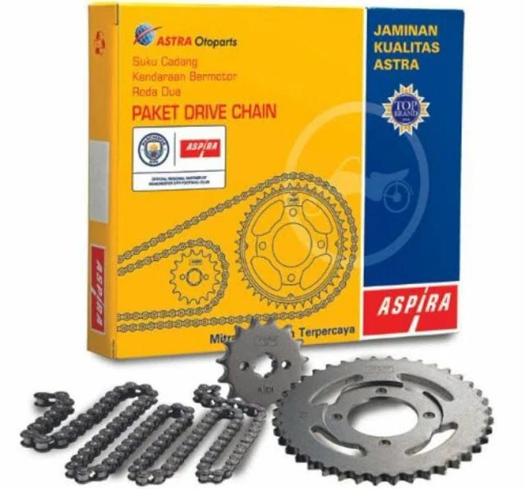

Ribuan item sparepart berkualitas untuk semua jenis motor dengan harga terbaik di Kabupaten Humbang Hasundutan.

Toko
Lokasi Strategis di Doloksanggul

850+
Jenis Sparepart Tersedia
Mitra Terpercaya Suku Cadang Motor Sejak 2004
UD. Galumbang memiliki perjalanan panjang melayani kebutuhan masyarakat di bidang otomotif. Berawal dari bengkel sepeda pada tahun 1972, usaha ini terus berkembang mengikuti zaman.
Dengan lebih dari 50 tahun pengalaman, UD. Galumbang kini menjadi mitra terpercaya bagi pemilik motor, mekanik, dan bengkel di Humbang Hasundutan dan sekitarnya.
"Galumbang" diambil dari kata Batak yang berarti gelombang melambangkan semangat usaha yang terus bergerak maju, menjangkau lebih banyak pelanggan, dan mengalir tanpa henti dalam melayani kebutuhan masyarakat.
Lebih dari sekadar toko — kami mitra otomotif yang sudah dipercaya warga Humbang Hasundutan lebih dari 50 tahun.
Semua sparepart dijamin keasliannya dari supplier resmi
Ribuan item untuk berbagai merek dan tipe motor selalu ready
Harga terbaik dengan sistem pembayaran yang fleksibel
Dipercaya sejak 1972, ribuan pelanggan setia jadi buktinya
Tim siap bantu pilih sparepart yang paling tepat
Ramah, cepat, dan profesional — kepuasan pelanggan nomor satu
Siap Dapatkan Sparepart Terbaik?
Konsultasi gratis, langsung dengan tim kami
Dari suspensi hingga ban — semua tersedia lengkap dengan kualitas terjamin

Shock absorber, cakram, filter oli, bearing & lebih banyak lagi

Performa optimal dengan filter berkualitas tinggi

Semua ukuran & merek ban tersedia lengkap

Alat ukur presisi untuk pengisian oli yang tepat

Oli mesin unggulan — JASO MA, teruji & terbukti

Gir set + rantai Aspira — jaminan kualitas AHM
Galumbang menyediakan suku cadang berkualitas untuk berbagai merek motor populer di Indonesia
Tidak Menemukan yang Anda Cari?
Hubungi kami! Kami siap membantu mencari sparepart yang Anda butuhkan
Chat WhatsAppHubungi kami sekarang — konsultasi gratis, harga terbaik, pengiriman ke seluruh Humbang Hasundutan.
Jam Operasional
Jl. Sisingamangaraja No. 71, Doloksanggul — mudah ditemukan, parkir luas
Alamat Lengkap
Jl. Sisingamangaraja No. 71Jam Buka